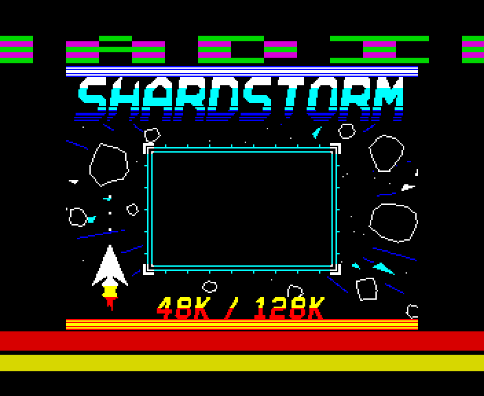

48K12 November 2026
A beeper tune while the 48K loads
Shardstorm's 48K tape loads with its tune playing on the beeper - three voices from one bit - while text scrolls in the top border and the VU meter pulses to the music in the bottom. The beeper and the tape share a single pin, so every bit is read between the notes.
The 48K has no sound chip: every sound it makes is the CPU flicking one bit of one port on and off, at exactly the right moments. So does every load: the CPU watches one bit of the same port for the tape's edges, at exactly the right moments. This tape does both at once, and keeps the text and the meter of the beam-locked tape going as well.
Listen to the tune on its own, and as a real 48K plays it, over the tape's own screech:
the beeper alone, 30 s
with the tape under it, 30 s

How it works
One pin, two jobs
On a 48K the speaker and the tape input meet at one pin of the ULA. While the loader holds the speaker high, the pin is high too, and the tape reads 1 whatever it is doing - and for a little while after, as the pin's voltage dies away. A loader that plays music has to read the tape only while the speaker is low, and long enough after it fell.
Our emulator didn't know this, so the first job was to teach it: the pin's voltages for each speaker and MIC setting, and how fast it falls, from measurements published for the Issue 3 board (Issue 2 too). With that in, a tape that reads while the speaker is up fails to load here, as it would on a real 48K - and every one of our older tapes was checked to load exactly as before.
Three voices from one bit
The loader works in pairs of scan lines. At the start of each pair it takes one sample of the tape; straight after, it plays one slot of the tune - a single short pulse on the speaker, 12, 20 or 32 T-states long, or none. That is 7,812 slots a second. The width of a pulse is its loudness; how often they come is the pitch. The lead plays one pulse a cycle, an octave down from the 128K's tune; the bass a burst of four; the snare random pulses. By the time the next sample is taken, the speaker has been low for over 400 T-states, more than twice what the pin needs.
The tune is Shardstorm's own, arranged for the beeper by a generator that works out every slot. Working out the next slots takes about 8% of the CPU, in straight code fitted between the tape samples.
Everything else, still in step
Every way through the loader still takes exactly one pair of lines, so the text in the top border and the meter in the bottom land where they should on every frame. The meter is driven by the beeper's voices themselves: the bass's pulse width in red, the lead's in yellow, the snare in cyan. Like the other 48K tape, its clock follows the beam, so it draws right on ZX Spin's and Retro Virtual Machine's 48Ks as well as ours.
One thing gave: while the text is drawn, 20 lines a frame have no room for pulses, so the music pauses for 1.3 ms every frame - a slight flutter, if you listen for it.
How it was checked
Checked by shardbeep48.js, loading the tape through our emulator's tape deck with the shared pin modelled, on Issue 3 and Issue 2 boards and on a quiet tape: every bit read right, every tape sample taken with the speaker low, every one of 234,000 tune slots as the generator worked it out, the text in the top border latch by latch, the meter against the voices, the game's parts byte for byte, then Shardstorm's menu - on our 48K and on one whose picture is 3 T-states later, like Spin's and RVM's. Fifteen deliberate faults each make the right check fail; one is reading the tape inside a pulse, which loads fine without the pin model and fails with it. Not yet heard on a real 48K, and most emulators don't model the shared pin, so there it will load either way.
Screens
As our emulator draws it
Full frames, border and all. Click a picture to see it bigger.


Download
Load it yourself
For the 48K. Each machine has its own tape; its .tzx and .tap hold the same blocks.
- In an emulator (ZX Spin, Retro Virtual Machine, Fuse and others): choose the machine the demo says - a 128K or +2 for the 128K ones - and open the
.tzxor the.tap. They hold the same blocks; use whichever your emulator prefers. On a 128K, pick Tape Loader; on a 48K, typeLOAD "". - Switch off instant and fast loading. The custom loaders read the tape signal themselves, edge by edge: an emulator that skips the tape skips the loader, and everything it does while it loads.
- On a real Spectrum: play the
.tzxinto the EAR socket from a TZX player. These are for the original machines' timing: the 48K, the 128K and the grey +2.